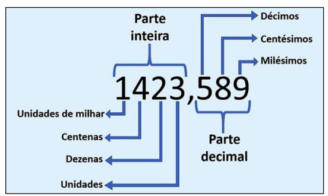
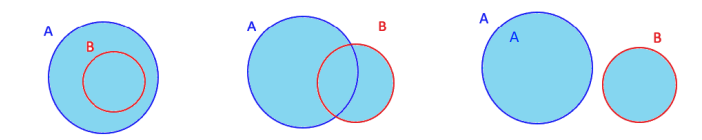
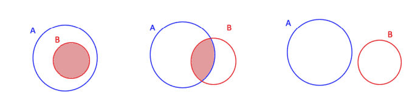

A definição para conjunto é a mesma da linguagem normal significa um agrupamento, uma coleção. Cada membro que entra em um conjunto é chamado de elemento. Podemos definir um conjunto por meio de uma propriedade que indicará quais são os elementos que a ele pertencem ou até mesmo indicando os próprios elementos que fazem parte da seleção
Com aqueles dois exemplos podemos explicar as relações de pertencimento:∈ pertence; ∉ não pertence.
Essas representações podem também serem feitas com linhas ou circulos
Em uma situação na qual um conjunto só possui um elemento nós o chamamos de conjunto unitário, E quando nele não há nada os chamamos de conjunto vazio. A representação de um conjunto vazio é diferente sendo representada desta forma { } ou até desta ∅
Esté conteúdo é representado tanto pelos simobolos Está contido = ⊂, não está contido = ⊄; Contém = ⊃, Não contém = ⊅. E de forma visual com circulos e linhas.

As linhas verdes estão contidas dentro do cerco das linhas roxas. ou seja Roxo ⊃ verde; verde está ⊂ em Roxo
Os números que conhecemos e que lidamos no nosso dia a dia, podem ser agrupados segundo suas características. O diagrama abaixo oferece uma representação da relação entre os conjuntos numéricos que conhecemos

Os naturais são os números do padrão de 0 ao infinito, são apenas numeros positivos, não decimais. ℕ{1,2,3,4,5,6,7,...}.
O simbolo ℕ∗ indica exclusão do zero desse desse conjunto ℕ∗ = ℕ − {0} = {1, 2, 3, 4, 5, 6, 7, 8, 9, … }
Um conjunto dentro destes conjuntos são os dos números pares indicados pela letra P {0,2,4,6,8}
Os números inteiros inclui os números negativos ao conjunto dos naturais. Ou seja os números inteiros os naturais
E da mesma forma que os inteiros tem uma forma de exclusão do zero ℤ ∗ = ℤ − {0} = {… , −3, −2, −1, 1, 2, 3, … }
Temos os inteiros positivos ℤ+* = { 1, 2, 3, 4, 5, 6, ... } = inteiros positivos
E também os inteiros negativos ℤ-* = {... , -4, -3, -2, -1} = inteiros negativos
O oposto ou simetrico de +5 é -5 pois eles tem a mesma distancia de zero, e isso funciona com qualquer número seja ele positivo ou negativo, é só somar ele com o seu oposto

Há operações de divisão em ℤ que resultam em valores que não fazem parte de ℤ. Por exemplo: a divisão de -3 por 2, sabemos que resulta em -1,5. Então, esse número “quebrado” precisa pertencer a outro conjunto numérico, que veremos a seguir.
Há operações de divisão em ℤ que resultam em valores que não fazem parte de ℤ. Por exemplo: a divisão de -3 por 2, sabemos que resulta em -1,5. Então, esse número “quebrado” precisa pertencer a outro conjunto numérico, que veremos a seguir.
É os numeros inteiros mais todos os tipos de fração tirando o zero que não tem fração. Oℕ ⊂ ℤ ⊂ ℚ
Agora, podemos realizar as divisões que eram impossíveis no conjunto dos números inteiros. Com isso, a reta numérica começa a ser preenchida. Entre dois números inteiros há infinitos números racionais.
Os números decimais são outra forma de representar as frações. Eles possuem uma parte inteira e outra não inteira depois da vírgula.
Eles podem ter suas casas decimais finitas ou infinitas. No caso de serem infinitas, é interessante observar que a parte decimal segue um padrão de repetição, ou seja, um grupo de números que chamamos de período se repetem infinitamente. Daí vem o nome dízimas periódicas.
Quando dividimos o numerador pelo denominador de uma fração, podemos obter dois tipos de resultados:

O denominador da fração são potências de 10, e a quantidade de zeros é determinada por quantos números tem depois da virgula.


É quando o numerador é meior que o denominador


Os números irracionais são as raizes (quadradas, cubicas), os números com expoentes e o PI
O conjunto real é a união de tudo, ele junta os racionais com os irracionais

Com o tempo percebeu-se a incompletude dos números reais para tratar de valores que surgiam nas respostas às equações algébricas.
No conjunto dos reais, sabemos que não há um número que elevado ao quadrado dê -1 ou dê qualquer número negativo. Logo, esse tipo de equação não tem solução no conjunto dos reais. Então, os Matemáticos criaram um conjunto numérico chamado de conjunto dos complexos, a fim de dar conta desse tipo de número. Definiu-se, então, a unidade imaginária i = √−𝟏.
𝑆 = {𝑥 ∈ ℂ | 𝑥 = ±𝑖}
Quando queremos juntar os elementos de dois conjuntos fazemos a união entre eles, representado pelo símbolo ∪.
A união do conjunto A e B é dada por:
Podemos notar que para X pertencer ao conjunto união ele precisa pertencer ao A ou B.
Podemos juntar conjuntos que tenham ou não tenham elementos em comum, podemos fazer uma representação gráfica por meio de diagramas.
A intercecção se da quando temos dois elementos em comum nos conjuntos e essa união é representada por esse simbolo ∩.
A seguir os diagramas mostram essas relações na cor rosa
A diferença entre dois conjuntos tem relação com os elementos que estão no primeiro conjunto extraindo-se dele os elementos que estão no segundo conjunto.
Profe esse conteúdo não entendi